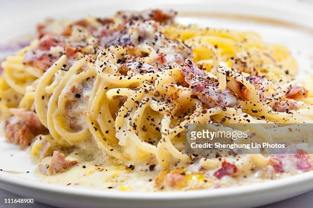
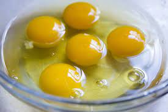
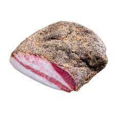
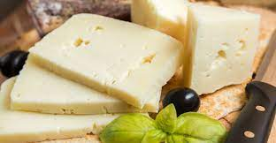
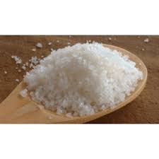
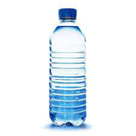
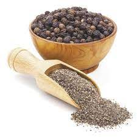

Receta Spaguetis
Ingredientes
Para 4 personas

- 320g de Spaguetis

- 3 yemas de Huevo

- 100 g de guanciale

- 50 g de Queso Pecorino

- Sal

- Agua

- Pimienta negra molida (al gusto)
Preparación
- Cocer los spaguetis entre 9 y 12 minutos (depende del gusto de cocion). Añadir sal al agua de cocion.
- bater 3 yemas de huevo con el queso pecorino hasta hacer una mezcla algo espesa(reservamos).
Dale unos toques de pimienta negra a esa mezcla.
- Cortar el guanciale en cubitos y dorar en la sartén.
- Una vez dorado el guanciale, verter los espaguetis cocidos en la sartén junto con la mezcla de huevo y queso que habiamos reservado antes,
- Agregar un cucharón de agua de la cocion a la sartén.
- Remover hasta mezclarlo todo bien y ya estaria listo para servir.